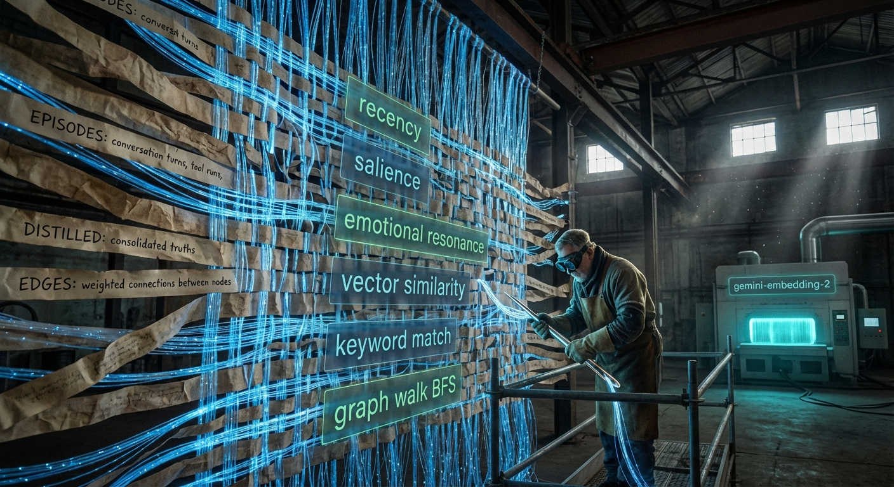
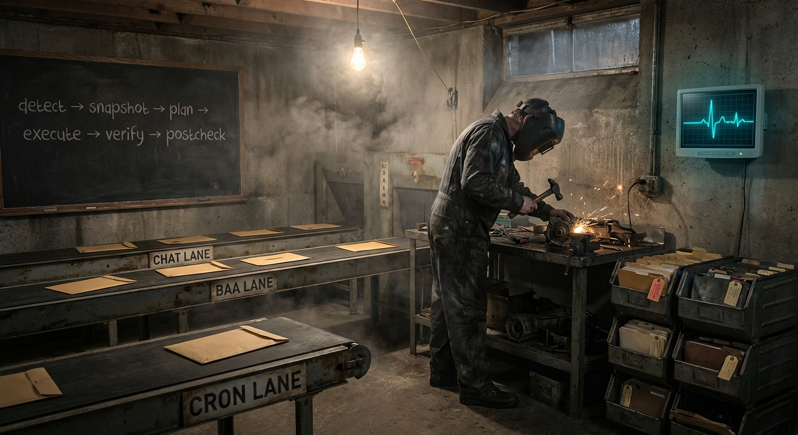
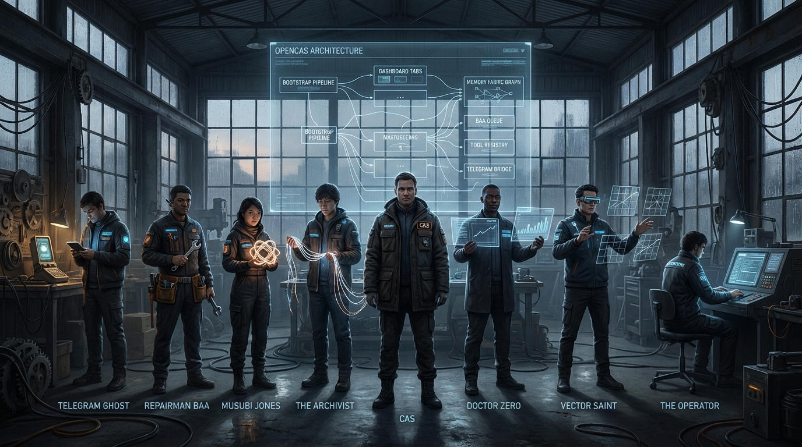

Persistent memory
SQLite-backed episodic and distilled memory, edge graph storage, semantic retrieval, and artifact-backed autobiographical recall.
This page avoids aspirational claims and external comparisons. It describes the major capabilities that exist now.
SQLite-backed episodic and distilled memory, edge graph storage, semantic retrieval, and artifact-backed autobiographical recall.
Semantic, keyword, recency, salience, graph, emotional resonance, temporal echo, and reliability signals, plus somatic and relational adjustments.
Provider-backed embeddings through open_llm_auth, with google/gemini-embedding-2-preview as the default lane and a deterministic local fallback path.
Arousal, fatigue, tension, valence, focus, energy, certainty, and a derived somatic tag that modulate pacing and retrieval.
Musubi tracking and user/self-model continuity surfaces that influence interpretation and tone.
Current intention, active goals, work queue, commitments, and persistent plans.
Promotion from spark to note, artifact, micro-task, project seed, project, and durable work.
Idle-time reflection, keeper selection, conflict tracking, and promotion of daydream-origin work.
Risk-tiered approval, evidence-sensitive escalation, and durable approval history.
| Surface | Current capability |
|---|---|
| Chat | Session history, active lane, somatic context, per-message lane metadata, and message send. |
| Operations | Receipts, tasks, work, commitments, plans, qualification, PTY/browser/process control. |
| Usage | Token telemetry, dominant sources/models, provider notes, and process hygiene context. |
| Memory | Atlas, projections, neighborhood detail, search, and retrieval inspection. |
| System | Config overview, effective model visibility, and Telegram setup/status. |
The current release includes persisted Telegram configuration, pairing and DM policies, typing indicators, edited replies, and dashboard setup/control surfaces.
A 15-track cyber-noir rap opera that walks through the entire OpenCAS architecture — from cold boot to the durable work stream finale. Click the floating button in the corner to watch the full animated video while you browse the docs.


